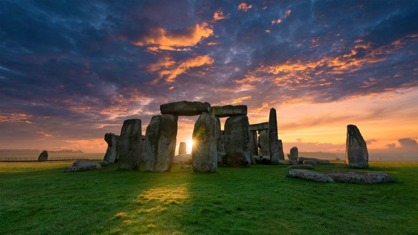
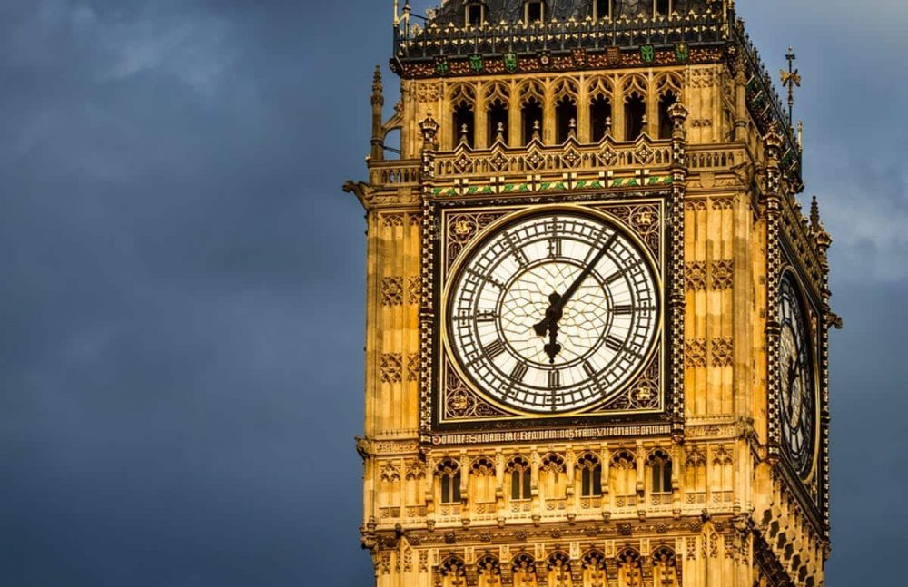

Pontos Turísticos
A Inglaterra é repleta de locais históricos e atrações que encantam visitantes do mundo inteiro. Desde o icônico Big Ben e o Palácio de Buckingham em Londres, até os antigos castelos medievais e parques naturais. Cada ponto turístico oferece uma experiência única que une história, cultura e beleza natural.


Big Ben
O Big Ben é um dos marcos mais famosos do Reino Unido. Localizado no Parlamento, é símbolo da pontualidade britânica e um ícone de Londres.